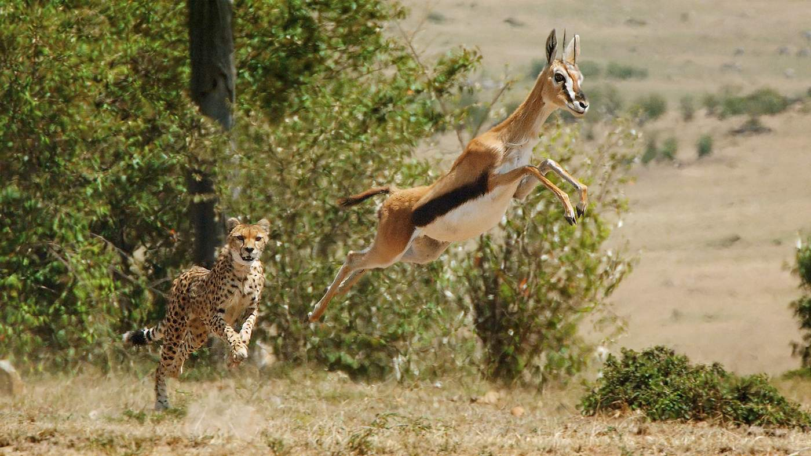
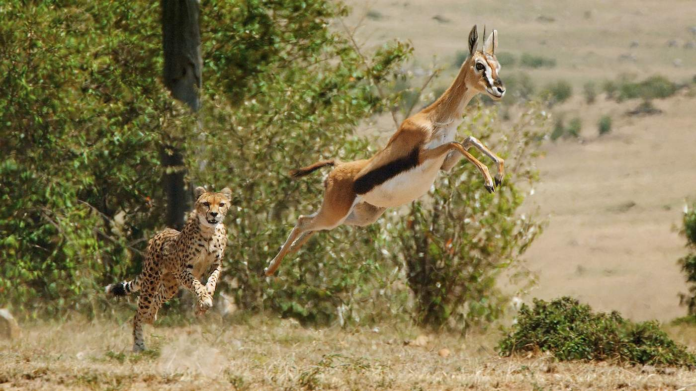

Cheetah's Speed: A Marvel of Evolution
The cheetah is universally recognized as the fastest land animal, capable of reaching speeds of 70 miles per hour (112 km/h). This unparalleled speed is the result of a combination of unique anatomical adaptations and specialized hunting strategies. Below is a detailed explanation of how cheetahs achieve and sustain their incredible speed.


Anatomy Behind the Speed
a. Muscular Structure
Lightweight, Aerodynamic Body: Cheetahs weigh only 75-140 pounds (34-64 kg), making them light enough to accelerate quickly while maintaining balance.
Specialized Muscles: Their limbs and back muscles are fine-tuned for explosive power, enabling rapid acceleration. Fast-twitch muscle fibers dominate, providing the force necessary for bursts of speed.
b. Flexible Spine
The cheetah's spine acts like a spring, flexing and extending during each stride. This allows for a larger stride length (up to 25 feet or 7.6 meters), enabling the cheetah to cover more ground with fewer strides.
c. Limbs and Claws
Long Limbs: Cheetahs have elongated limbs that function like levers, optimizing speed and stride efficiency.
Semi-Retractable Claws: Unlike other cats, their claws are semi-retractable, providing grip and traction similar to cleats during high-speed runs.
d. Tail as a Rudder
The cheetah's long, muscular tail serves as a counterbalance and rudder. It helps maintain stability and sharp directional changes during high-speed pursuits.
e. Enlarged Nasal Passages and Lungs
Breathing Efficiency: Cheetahs have enlarged nasal passages, lungs, and heart, which allow for rapid oxygen intake and circulation. During a sprint, they can take 60-150 breaths per minute, ensuring their muscles receive enough oxygen.

Speed Mechanics
a. Acceleration
Cheetahs can accelerate from 0 to 60 mph (97 km/h) in just 3 seconds, rivaling some of the world's fastest sports cars. This acceleration is powered by their muscular limbs, flexible spine, and spring-like motion.
b. Stride and Gait
At top speed, cheetahs take about 3-4 strides per second, with each stride covering significant ground due to their extended limbs and flexible spine.
Double Suspension Gait: During each stride, all four feet are off the ground twice - once when the legs are fully extended and once when they are fully tucked.
c. Limitations
While their top speed is impressive, cheetahs can only maintain it for about 20-30 seconds. This is because their bodies rapidly overheat, and the intense exertion depletes their energy reserves.

Hunting Strategy and Speed in Action
Cheetahs use their speed as part of a carefully calculated hunting strategy:
1.Stalking: They approach prey stealthily, reducing the distance to around 100-200 feet (30-60 meters) before initiating a chase.
2.Explosive Sprint: Once close, they unleash a burst of speed, using their sharp eyesight to lock onto the target.
3.Pouncing: Using their claws and momentum, they trip or grab the prey during the final moments of the chase.
Cheetahs often prioritize smaller, easier-to-catch prey like gazelles or impalas to ensure success within their short burst of energy.
 

Comparison to Other Fast Animals
While other animals are fast, the cheetah's combination of speed and agility sets it apart:
Pronghorn Antelope: Can reach speeds of 55 mph (88 km/h) but for longer duration.
Greyhound: Tops out at 45 mph (72 km/h).
Horse: Can sprint up to 55 mph (88 km/h) but lacks the cheetah's acceleration.
The cheetah's unique ability to combine speed, acceleration, and precision during a hunt is unmatched.


Evolutionary Trade-offs
Cheetahs' speed comes with certain compromises:
Endurance: They lack the stamina for prolonged chases, making them vulnerable if they fail to catch prey quickly.
Build: Their lightweight frame sacrifices brute strength, leaving them unable to defend their kills from larger predators like lions or hyenas.
Why Cheetah's Speed Matters
The cheetah's speed is not just a fascinating trait; it is crucial for its survival in the wild. Their agility allows them to hunt in open grasslands where stealth alone would be ineffective. However, as habitats shrink and prey availability decreases, their reliance on speed in short bursts can become a challenge.